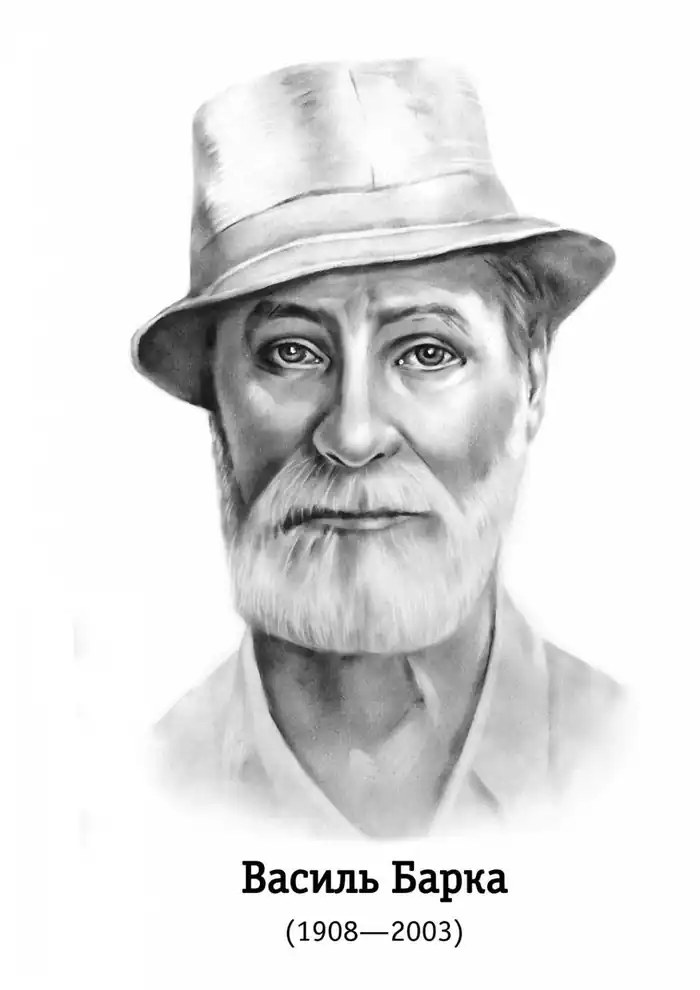
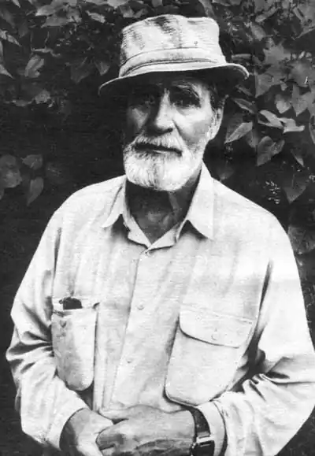
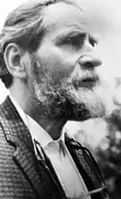

(Справжнє ім’я — Василь Костянтинович Очерет)
(1908 — 2003)
АВТОБІОГРАФІЯ 16 липня 1908 — село Солониця: дата і місце народження. Село невелике, примітне тільки старовинною церквою, валами — рештками козацького табору Северина Наливайка — та широкими солончаками поблизу: звідти в час біди люди, приходячи за десятки верст, брали "ропу" замість соли; можливо, так було з вікопомної давнини. Батько відбув звичайну службу в козачих частинах і російсько-японську війну. Сім'я переїхала на відкритий степ, приблизно за п'ять верст від міста (Лубні), розміщеного над річкою на горах, так що здалеку видно було позолочені бані його церков. В степу, від великого шляху Лубні — Ромодан, ночами звертали напасники до самотньої оселі — грабувати. Батько відганяв; стрілянина часом тяглася до ранку. То перші враження неспокійного побуту. На прохання свого молодшого брата, щойно одруженого, батько помінявся з ним наділами: відступив йому вибудувану садибу з великим садом, а перебрався на порожню ділянку за дванадцять верст від міста і там знов почав будівництво. Нова оселя постала недалеко від хуторця Миколаївки. Внизу, при згір'ях, світилось проточне озеро. А по другу сторону — степ із козачими могилами і якимись давнішніми; з кам'яними статуями на верхах. В хуторі була трикласна початкова школа — я відвідував її. Перше мистецьке враження: мандрівний диякон-живописець на замовлення батька намалював на великому аркуші покрівельного заліза — ікону "Моління про чашу": Христос біля скелі, серед смутних дерев Гетсиманського саду. Образ займав усе покуття хати. Батька взяли на російсько-німецьку війну. 1916 року він звільнився покаліченим (його з вибуху присипало землею: мав пробиту ногу і зрушений хребет). Лікування електрикою коштувало тоді дорого і забрало гроші з проданого наділу. Переїхали в місто. Жили в сараї на дворищі купця другої гільдії — в нього батько колись, ставивши хату, купував будівельний матеріял. Батько взяв на виплату хатку на узліссі, за містом. Нас в родині було три брати; всі вчилися в духовному училищі ("бурсі"). Не було грошей платити за навчання в гімназії, а в духовному училищі, згідно з давнім привілеєм, діти з "козачого сословія" могли вчитися безкоштовно. В роки громадянської війни, при постійних змінах влади, "бурса" діяла. Режим, з крайніми формальностями, був суворий. Часті кари, методи навчання (з російської граматики, латині, початкової математики) — традиційні, з перевагою муштри. Школярі надолужували своє — відчайним босяцтвом; при ньому, звичайно, руйнувався настрій справжньої побожности. Переформувалася бурса в трудову школу: спершу — в старому будинку. Викладач математики давав читати клясичні українські книжки. Школа перейшла в новий будинок; там нові вчителі навчили нас безбожництва. Батько працював спершу як тесляр в артілі "Увечный воин"; потім став брати на обробіток і догляд запущені сади — за третину врожаю. Раз ми доглядали сад вдови; її чоловіка, старшину з армії УНР, під час вечірнього відходу з міста, при наступі червоноармійців, вбито на брамі. Вдова весь час носила чорний одяг — в жалобі по ньому. Одного дня, коли я стеріг сад, вона дала переглядати дві книги: "Гайдамаки" Шевченка — з ілюстраціями Сластіона і "Божественну комедію" Данте — з ілюстраціями Доре. "Гайдамаки" прочиталися легко, з цікавістю; але "Божественна комедія" зосталася більшою частиною незрозуміла, тільки чудові ілюстрації ввели в цілий світ надзвичайних подій і запам'яталися назавжди: так само, як постійні розмови батька з його приятелями — про його улюблену книгу, "Апокаліпсис", про значення приходу кожного ангела і кожного звіра. Батька мобілізували і поставили інструктором в майстернях, що виробляли спорядження для коней (постачалася сідлами та уздечками армія Будьонного). Одного разу в потязі, коли відправляв сідла, — занедужав на тиф, після якого почалися ускладнення. Вже помирав, і його віднесли в мертвецьку (колишня часовня в кінці двору при лікарні), але талановитий молодий лікар Котляревський, з єврейської родини, прибувши після студій, пішов на огляд і завернув його нари назад. Коло двох років батько лежав недужий. Була нужда і голод. Тоді я помандрував найматися на працю по селах і приносив "натуральний" заробіток. То гіркий час; але воднораз — добра школа побуту, школа життя з багатствами народних говірок. Повно драм людських. Живі перекази. Щедра природа. Різноманітність селянських характерів. Хоч робота тяжка: від сонця до сонця. Неділями ж пасучи коні в степах, багато читав; приносив книги з міста, позичаючи в приятелів. В останню зиму наймів почав ходити в школу до міста — за вісім верст. Вставати доводилося рано: зробити що треба і встигнути до школи, хоч би й наставали сніжні бурі. Зворотна дорога бувала і в темряві; і треба було впоратися коло коней і волів. Повернувся до міста зовсім; скінчив "трудову школу". Поступив на учительські курси, що перетворилися на педагогічний технікум. Помилково вибрав собі математику і фізику як фах: можливо, через вплив найстаршого брата. Він пізніше став фахівцем — автором першого в СРСР підручника фотограметрії, виданого картографічною управою Совнаркому в Москві, і професором математики в Новосибірському університеті: приїжджав туди з підполяр'я, де був головним інженером аерофотознімання на все побережжя Льодовитого океану. Середульший брат став теж інженером: був начальником устаткування ливарного цеху, що його ж будував, — в Дніпродзержинську, в великому заводі. Найстарший брат, Олександр, працював до кінця життя як інженер. Середульший, Іван, здійснив новий життєвий поклик: прийняв сан священика. Хоч був на рік старший, ми разом відвідували класи сільської школи і Духовного училища в місті. Він в юні роки любив бути служкою в храмі; все пригадую його в стихарі, з свічкою — в Братській церкві, коли служили, приїжджаючи, митрополит В. Липківський і єпископ Ярещенко, надзвичайний проповідник, що приваблював мене в двадцятих роках. Хоч то вже був час втрати віри: так сталося зо мною; але брат зберіг її* (*Чутка про насильницьку смерть брата і матері не потвердилась). Мене тоді цікавили соціальні науки. Вивчав марксизм — з бажанням збагнути глибини цього вчення: студіював його "клясиків". Але хмарні теорії не могли задовольнити серця. В той час популярним ставав бухарінський стиль — з ідеалом ліберального соціялізму, скажім, як в реформах Дубчека для сучасної Чехо-Словаччини. Зацікавили праці Богданова; його "Емпіріомонізм" і "Тектологія", приступні для читача в 20-х роках, становили міст для переходу до концепції модерної доби: в зв'язку з працями філософів і фізиків Віденської школи. Тоді гриміла літературна полеміка, прапороносцем якої став М. Хвильовий. Але, признаюсь, була мені якась стороння; бракувало там шукання глибинних сторін справи, і весь час виходив назверх таки спрощений концептивний позитивізм, переборений тільки в кінці полеміки — в проголошенні гасла про "романтику вітаїзму". Зате праця Юринця про Тичину дуже тоді сподобалась; він, походячи з Галичини, як і Курбас, був мислителем — енциклопедистом, що докладно знав розвиток європейської поезії. Його монографія на той час була новістю, приводила до оригінальних висновків про багатосторонній стиль "клярнетиста" Тичини. Було в мене тоді благоговіння перед нашим мандрівним філософом XVIII століття, Сковородою (походив з моєї Лубенщини); і я не бачив тоді достатньої причини, чому так полемісти з Відродження 20-х років здебільшого "звисока" ставилися до нашої старовинної клясики. Для мене, цілковитого сковородинця, близько підійшов Достоєвський, предмет величезного ентузіязму, — і в ті роки, і пізніше. З рідного письменства були кумирами — звичайно, крім Шевченка, — на першому місці Іван Франко: особливо його проза, після нього Коцюбинський, Стефаник. Закінчивши педагогічний технікум, після всіх драм і конфліктів став учителем математики і фізики, але слабим, в неповній середній школі. Послали в дуже глуху Сьому Роту, шахтарський "посьолок", що одночасно числився як село Нижнє, за якусь версту від шахти "Тошківка": між високими крейдяними горами і нижчими — із звичайних скель, на березі Дінця. Сьома Рота, лежачи в міжгір'ї, втопала або в чорний дим від шахти, або в білу куряву, несену з крейдяних верхів'їв. Нещасливі випадки в підземеллі, пияцтво і "поножовщина" були звичайним явищем, і завжди вранці на вулицях знаходили трупи. Учні спочатку ставилися вороже до нових вчителів, але скоро привикли і були дуже милі. Довелося 1928 року виїхати поспіхом з України, властиво — тікати: через конфлікти з місцевими партійними керівниками. Пристав на Північному Кавказі, що тоді разом з Кубанню входив до РСФСР (як і тепер). Здавна приманював Кавказ; і Кубань була омріяною землею. Там скінчив філологічний факультет, зрікшися попереднього фаху, для якого не годився. Вже на Донбасі, в одинокості, брався перечитувати модерністичні вірші; вивчав їх напам'ять, передусім — вірші Тичини. А тепер, згадуючи життя біля Дінця, складав і сам лірику. Послав перші вірші Тичині, і, — на моє радісне здивування! — він надрукував їх в "Червоному шляху", найбільшому в той час періодичному журналі в УССР. (Тичина редагував відділ поезії). 1930 року вийшла моя перша збірка поезій: "Шляхи" в Державному видавництві в Харкові, тодішній столиці. Рання авторська надія була гвалтовно обламана жахливо напасницькою рецензією, сам заголовок якої відбиває весь її зміст: "Проти клясово-ворожих вилазок в поезії". Друкувалася вона на всю сторінку в столичній "Літературній газеті"; містила неправдиві закиди. Я тоді був цілковито лояльним громадянином і зовсім не думав про "вилазки"; тільки хотів знайти образи для виразу якоїсь яскравої сутности з подій життя. Газета обвинуватила в злочинних речах, зокрема — в спробах відновити релігійний "пережиток капіталізму", хоч я теж і цього не робив, а тільки будував символічні картини з подихами вічних сил, що діють над обмеженою реальністю видимого. Найгостріше обвинувачення було — що я нібито хотів віршами повідомити пресу на Заході про фізичну ліквідацію "служників культу", але насправді я тільки подав експресіоністичний опис того, що діялося під час антирелігійного карнавалу, коли артисти на плятформах зображували священика, патера і равина, ведених під скісний гостряк гільйотини.